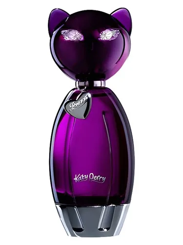

Purr
- Para mujer
- Familia frutal
- Lanzado en 2010
- Ideal para primavera y otoño
Disponible: saldo con caja y sin caja
Cómo huele
Frutal
Dulce
Floral
Vainilla
Sus notas
Salida
melocotónmanzanagardeniabambú verde
Corazón
jazmínfresia rosarosa
Fondo
orquídea de vainillasándaloámbarcocoalmizcle
Purr de Katy Perry es un perfume frutal para mujer, lanzado en 2010. Abre con melocotón y manzana, en el corazón tiene jazmín y fresia rosa y deja un fondo de orquídea de vainilla y sándalo. Lo que más se siente: frutal, dulce y floral.